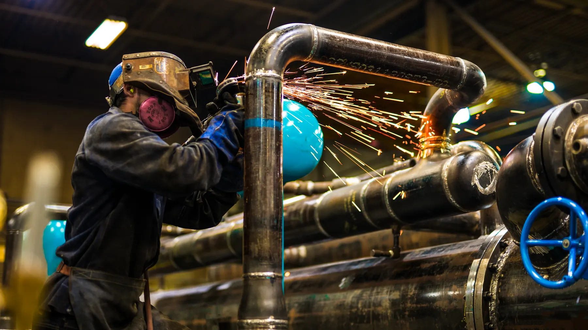
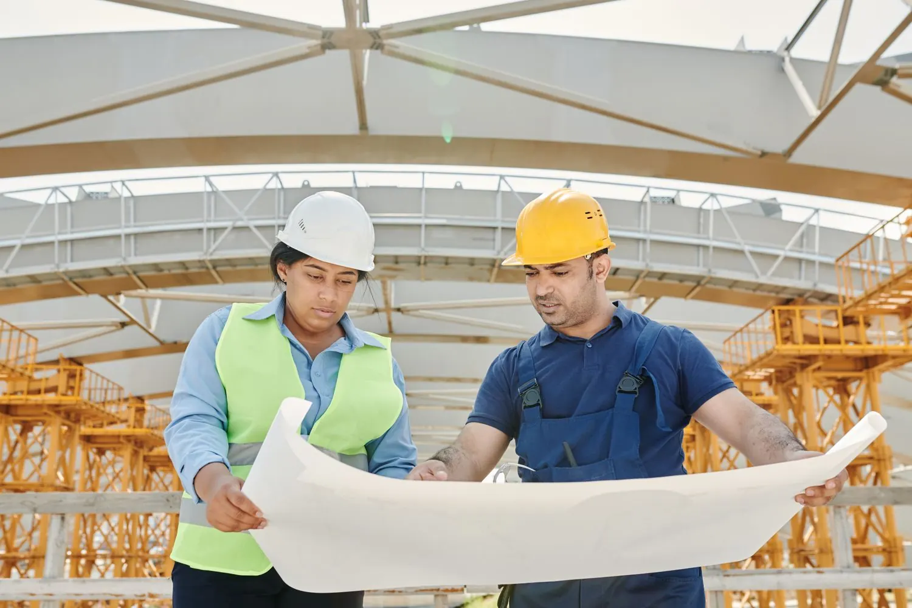
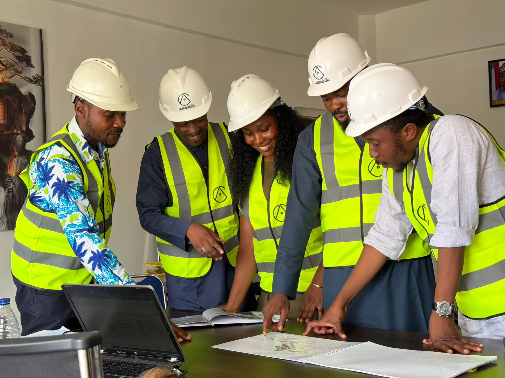
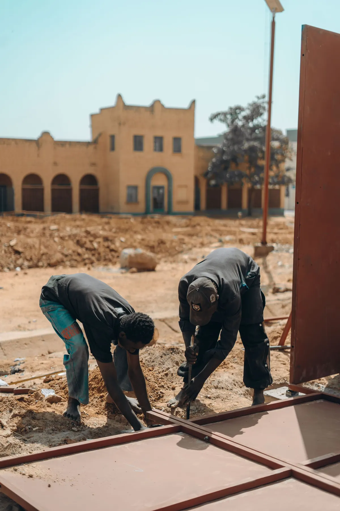
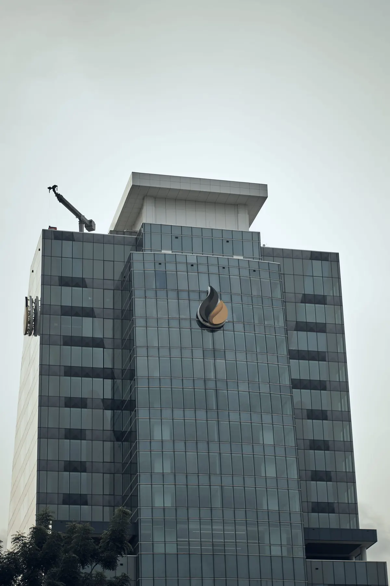

Mechanical work with local expertise.
GIMDO Engineering Works Limited is a CRB-registered Class 4 mechanical contractor (Registration M4/91/04/2026) serving Tanzania with professional mechanical engineering solutions. Under the leadership of Managing Director Aldo Mavika, we deliver dependable work, clear communication, and practical engineering outcomes for commercial, industrial, and residential projects across the country.
Professional Mechanical Contracting
As a CRB-registered Class 4 mechanical contractor, we are authorized to undertake mechanical engineering projects within our certified scope, including HVAC systems, plumbing installations, fire protection systems, and industrial mechanical works throughout Tanzania. Our comprehensive mechanical contracting services are designed to support the construction and infrastructure development needs of Tanzania's growing economy, from commercial building projects in Dar es Salaam to industrial facilities in special economic zones and residential developments across the country.
Mechanical Engineering
Comprehensive mechanical contracting services including installation, maintenance, and repair of HVAC systems, plumbing infrastructure, and mechanical equipment for buildings and industrial facilities. Our team handles complete mechanical system integration from design consultation through installation, testing, commissioning, and ongoing maintenance to ensure optimal performance and longevity of mechanical systems in commercial, industrial, and residential projects across Tanzania.
Construction Support
Supporting infrastructure development projects with skilled workforce and proven technical capabilities in mechanical systems integration for new construction and renovation projects. We work closely with general contractors, architects, and engineers to ensure seamless integration of mechanical systems into overall building design, providing timely delivery, quality workmanship, and adherence to project schedules and budget requirements for construction projects of all sizes throughout Tanzania.
CRB Certified
Officially registered with Tanzania's Contractors Registration Board as a Class 4 local mechanical contractor (Registration M4/91/04/2026), ensuring compliance with national standards and regulations. Our certification demonstrates our technical competence, financial capacity, and commitment to maintaining professional standards in the Tanzanian construction industry, providing clients with confidence in our ability to deliver quality mechanical contracting services that meet all regulatory requirements.


Local Excellence, Professional Standards
GIMDO Engineering Works Limited operates under the leadership of Managing Director Aldo Mavika, bringing together technical expertise with deep understanding of Tanzania's construction landscape. Our registration with the Contractors Registration Board demonstrates our commitment to maintaining professional standards and regulatory compliance in all our operations. We have built our reputation on delivering quality mechanical engineering solutions that meet the specific needs of Tanzanian projects while adhering to international best practices and safety standards.
As a locally-owned and operated contractor, we understand the unique challenges and opportunities of working in Tanzania's construction sector. We bring this local knowledge to every engagement, ensuring that our mechanical engineering solutions are tailored to the specific needs of Tanzanian projects while adhering to international best practices. Our team consists of skilled technicians, engineers, and project managers who are familiar with local building codes, regulatory requirements, and operational considerations specific to Tanzania's construction environment.
Our Class 4 classification enables us to undertake mechanical projects of significant scale and complexity, serving clients across Dar es Salaam and other regions of Tanzania with reliable, high-quality mechanical contracting services. We have developed strong relationships with suppliers, subcontractors, and industry partners throughout Tanzania, enabling us to source quality materials and coordinate complex mechanical installations efficiently and cost-effectively. Our commitment to customer satisfaction drives us to exceed expectations on every project, delivering mechanical engineering solutions that add value and stand the test of time.
Building Tanzania's Infrastructure
GIMDO is registered with Tanzania's Contractors Registration Board as a local Class 4 mechanical contractor. Our registration details and contractor category are available for clients to verify.
Built around the systems buildings rely on.
These references show construction activity, engineering coordination and urban infrastructure. They are illustrative contexts, not completed GIMDO projects.

Structural work and mechanical services need to move in a coordinated sequence. Site access, equipment routes and trade interfaces are reviewed before installation.

Offices rely on coordinated ventilation, plumbing and mechanical equipment. Their locations, access and maintenance needs must work with the approved building plans.
Every site brings different access, service-routing and programme requirements. GIMDO reviews the project brief and registered scope before agreeing on a mechanical package.
Ready to Work Together?
Contact us to discuss your mechanical contracting needs. We're ready to bring our expertise to your next project in Tanzania, whether it's a new construction project, renovation work, or ongoing maintenance requirements for your mechanical systems.